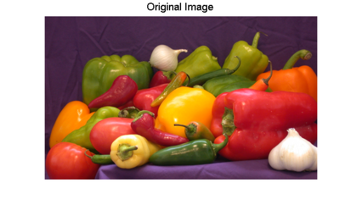
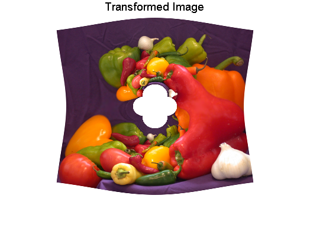
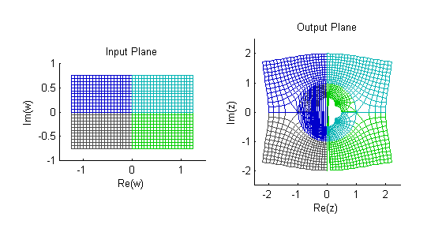
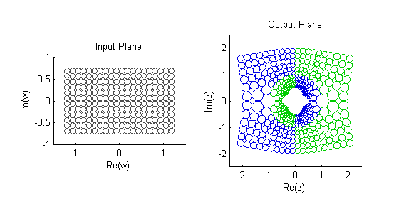
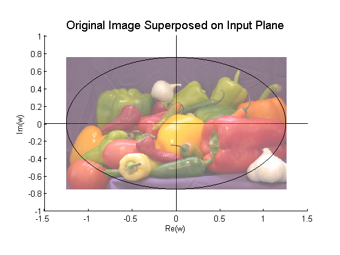
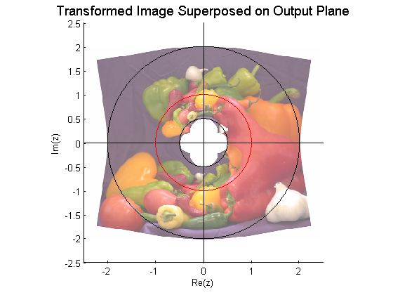
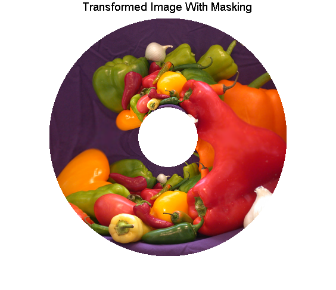
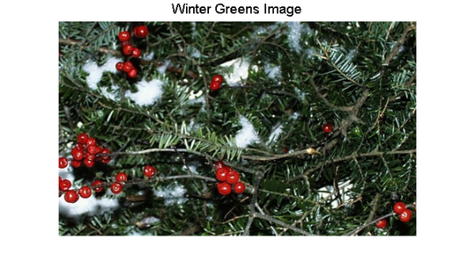
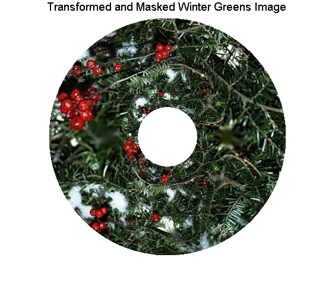

等角写像の調査
幾何学的なイメージ変換は、流体問題において重要な等角写像の理解に役立ちます。また、写像自体、対象となる特別な効果に対して、イメージを変換するために使用することができます。
目次
手順 1: 等角変換の選択
等角変換、つまりマッピングには、多数の重要なプロパティと使用法があります。 イメージ変換に関連するプロパティの 1 つに、ローカル形状の維持があります (孤立点での維持を除く場合もあります)。
このデモでは、2 次元等角変換を使用してイメージを歪めます。 出力から入力へのマッピングである g: R^2 -> R^2 は、複雑な解析的関数 G: C -> C で定義されます。ここで、
G(z) = (z + 1/z) / 2 です。
以下では、R^2 (Euclidean 平面) の各点 (x,y) と、C (複素平面) の点 z = x + i*y の間の直接対応により g を定義します。
g(x,y) = (Re(w),Im(w)) = (u,v)
ここで、
w = u + i*v = G(x + i*y) です。
流体力学では、この等角写像が重要です。これは、円板 (または、3 番目の次元を追加する場合は円筒) の周りの流線を直線に変換するためです (『Introduction to Applied Mathematics』、Strang, Gilbert 著、マサチューセッツ州ウェルズリー Wellesley-Cambridge Press 発行、1986 の 340～341 ページを参照してください)。
複素変数の値に関する注記： x および y について g の定義を直接表すことができますが、元となる変換の簡潔さがあいまいになります。 この欠点は、以下の手順 3 にも現れます。 そこで、実数変数を単純に挿入する場合、ただ単に 2 次の公式を適用するのではなく、連立非線形方程式の組を解く必要があります。
手順 2: 等角変換を使用したイメージの歪み
開始するには、ピーマンのイメージを読み込み、300×500 のサブイメージを抽出して、そのイメージを表示します。
A = imread('peppers.png'); A = A(31:330,1:500,:); figure, imshow(A) title('Original Image','FontSize',14)
次に、maketform を使用して、関数 conformalInverse へのハンドルをその INVERSE_FCN 引数として持つカスタムの tform 構造体を作成します。
conformal = maketform('custom', 2, 2, [], @conformalInverse, []);
conformalInverse を表示する場合は、以下のようになります。
type conformalInverse.m
function U = conformalInverse(X, t)
% conformalInverse Inverse conformal transformation.
%
% Supports conformal transformation demo, ipexconformal.m
% ("Exploring a Conformal Mapping").
% Copyright 2005-2009 The MathWorks, Inc.
% $Revision: 1.1.4.2.2.1 $ $Date: 2010/07/29 21:28:50 $
Z = complex(X(:,1),X(:,2));
W = (Z + 1./Z)/2;
U(:,2) = imag(W);
U(:,1) = real(W);
水平および垂直の範囲は、元のイメージと変換されたイメージを入出力の複素平面にマッピングする場合に必要です。uData および vData の割合が、元のイメージの高さ幅比 (3/5) に一致することに注意してください。
uData = [ -1.25 1.25]; % Bounds for REAL(w) vData = [ 0.75 -0.75]; % Bounds for IMAG(w) xData = [ -2.4 2.4 ]; % Bounds for REAL(z) yData = [ 2.0 -2.0 ]; % Bounds for IMAG(z)
SIZE パラメーターを使用して imtransform を適用し、縦横比が xData および yData の割合 (6/5) と一致することを確認し、その結果を表示します。
B = imtransform( A, conformal, 'cubic', ... 'UData', uData,'VData', vData,... 'XData', xData,'YData', yData,... 'Size', [300 360], 'FillValues', 255 ); figure, imshow(B) title('Transformed Image','FontSize',14)
元のイメージと変換されたイメージを比較します。エッジがカーブしていることを除き、イメージの外側の境界は変換によって維持されます。元のイメージの各特徴は変換されたイメージに 2 回現れることに注意してください (各種のピーマンを見てください)。また、変換されたイメージの中央に穴があります。この穴のエッジの周りには 4 つの規則的な先端があります。
実際は、入力 w 平面のすべての点は、出力 z 平面の 2 つの点 (それぞれ単位円の内側と外側の点) にマッピングされます。単位円の内側のコピーは、外側のコピーよりかなり小さくなります。中心の穴の周りの先端は、単位円の内側にマッピングされた 4 つのイメージ コーナーの単なるコピーです。
手順 3:フォワード変換の構築
maketform で作成された変換にフォワード関数がある場合、tformfwd を通常の幾何学的オブジェクト (特に、長方形グリッドおよび円の一様配列) に適用し、変換に関する詳細な洞察を得ることができます。この例では、G が 2 つの出力点を各入力点にマッピングするので、一意のフォワード変換はありません。ただし、注意して 2 つのフォワード関数を使用すれば続行できます。
w = (z + 1/z)/2 とし、2 次方程式を解くと、結果は以下のようになります。
z^2 + 2*w*z + 1 = 0
以下のことがわかります。
z = w +/- sqrt{(w^2 - 1)正および負の平方根により、2 つの別個のフォワード変換が導かれます。maketform と、関数 conformalForward1 へのハンドルを使用して 1 つ目の変換を作成します。
t1 = maketform('custom', 2, 2, @conformalForward1, [], []);
conformalForward1 を表示する場合は、以下のようになります。
type conformalForward1.m
function X = conformalForward1(U, t)
% conformalForward1 Forward transformation with positive square root.
%
% Supports conformal transformation demo, ipexconformal.m
% ("Exploring a Conformal Mapping").
% Copyright 2005-2009 The MathWorks, Inc.
% $Revision: 1.1.4.2.2.1 $ $Date: 2010/07/29 21:28:50 $
W = complex(U(:,1),U(:,2));
Z = W + sqrt(W.^2 - 1);
X(:,2) = imag(Z);
X(:,1) = real(Z);
符号変化を除き conformalForward1 とほとんど同じ別の関数で、2 つ目の変換を作成します。
t2 = maketform('custom', 2, 2, @conformalForward2, [], []); type conformalForward2.m
function X = conformalForward2(U, t)
% conformalForward2 Forward transformation with negative square root.
%
% Supports conformal transformation demo, ipexconformal.m
% ("Exploring a Conformal Mapping").
% Copyright 2005-2009 The MathWorks, Inc.
% $Revision: 1.1.4.2.2.1 $ $Date: 2010/07/29 21:28:50 $
W = complex(U(:,1),U(:,2));
Z = W - sqrt(W.^2 - 1);
X(:,2) = imag(Z);
X(:,1) = real(Z);
手順 4:グリッド ラインを使用したマッピングの調査
imdemos ディレクトリに存在する他の関数を使用して、2 つのフォワード変換により、線のグリッドのマッピングを示すことができます。
f3 = figure('Name','Conformal Transformation:Grid Lines'); axIn = conformalSetupInputAxes( subplot(1,2,1)); axOut = conformalSetupOutputAxes(subplot(1,2,2)); conformalShowLines(axIn, axOut, t1, t2) % Reduce wasted vertical space in figure set(f3,'Position',[1 1 1 0.7].*get(f3,'Position'))
変換の前後に、グリッド ラインが入力面の象限に従って色分けされていることがわかります。その色も出力面に変換されたグリッドに従います。象限は、単位円の外側の領域と単位円の内側の領域にそれぞれ変わることに注意してください。グリッド ライン間の直角交点は、実数軸上の +1 および -1 の点を除き、変換時に維持されます (等角マッピングの形状維持プロパティの証拠)。
手順 5:円群を使用したマッピングの調査
等角変換では、小さな円はほとんど円状のまま残り、位置とサイズのみが変わります。ここでは、再度 2 つのフォワード変換を適用することで、均一なサイズの円の規則的配列をマッピングします。
f4 = figure('Name','Conformal Transformation:Circles'); axIn = conformalSetupInputAxes( subplot(1,2,1)); axOut = conformalSetupOutputAxes(subplot(1,2,2)); conformalShowCircles(axIn, axOut, t1, t2) % Reduce wasted vertical space in figure set(f4,'Position',[1 1 1 0.7].*get(f4,'Position'))
接触が維持されているサークル パッキングへの変換がわかります。この例での色分けは、w^2 - 1 の正 (緑) または負 (青) の平方根の使用を示します。円は大幅に変わりますが、円のまま残ることに注意してください (再度の形状維持)。
手順 6:イメージを使用したマッピングの調査
等角写像を詳細に調査するには、入力イメージおよび変換されたイメージを、前の例で使用した軸の組みに配置し、カーブのセットを重ね合わせます。
最初に、半透明に描画された入力イメージを、実数軸に沿った黒い楕円と赤い線と共に、等角写像の入力軸上に表示します。
figure axIn = conformalSetupInputAxes(axes); conformalShowInput(axIn, A, uData, vData) title('Original Image Superposed on Input Plane','FontSize',14)
次に、出力イメージを、2 つの黒い円と 1 つの赤い円と共に、等角写像の出力軸上に表示します。ここでも、イメージが半透明になります。
figure axOut = conformalSetupOutputAxes(axes); conformalShowOutput(axOut, B, xData, yData) title('Transformed Image Superposed on Output Plane','FontSize',14)
MATLAB® グラフィックスを使用すると、元のイメージと変換されたイメージをシフトしてスケーリングし、入力 (w) および出力 (z) 平面上にそれぞれ簡単に重ね合わせることができます。半透明を使用すると、楕円、線、および円を参照しやすくなります。w 平面内の楕円は、水平軸上の 5/4 および -5/4 と、垂直軸上の 3/4 および -3/4 に切片があります。G は、この楕円の原点を中心とする 2 つの円 (半径 2 の円と半径 1/2 の円) をマッピングします。さらに、赤で示したように、G は単位円を実数軸上の区間 [-1 1] にマッピングします。
手順 7:出力イメージの部分のマスクによる特別な効果の取得
カスタムの tform 構造体内の逆変換関数が、与えられた出力イメージ位置について NaN が埋め込まれたベクトルを返す場合、関数 imtransform (および tformarray) は、該当の位置に指定された埋め込み値を割り当てます。この手順では、手順 1 を繰り返しますが、この機能を利用するよう逆変換関数を若干変更します。
type conformalInverseClip.m
function U = conformalInverseClip( X, t )
% conformalInverseClip Inverse conformal transformation with clipping.
%
% This is a modification of conformalInverse in which points in X
% inside the circle of radius 1/2 or outside the circle of radius 2 map to
% NaN + i*NaN.
%
% Supports conformal transformation demo, ipexconformal.m
% ("Exploring a Conformal Mapping").
% Copyright 2000-2009 The MathWorks, Inc.
% $Revision: 1.1.4.2.2.1 $ $Date: 2010/07/29 21:28:50 $
Z = complex(X(:,1),X(:,2));
W = (Z + 1./Z)/2;
q = 0.5 <= abs(Z) & abs(Z) <= 2;
W(~q) = complex(NaN,NaN);
U(:,2) = imag(W);
U(:,1) = real(W);
これは、以下に示す 2 行を追加したことを除き、手順 2 で定義した関数と同じです。
q = 0.5 <= abs(Z) & abs(Z) <= 2; W(~q) = complex(NaN,NaN);
これにより、逆変換によって、原点に中心があり radii が 1/2 および 2 である 2 つの円の間にない点で NaN が返されます。この結果、指定の埋め込み値を持つ出力イメージの該当部分をマスクすることになります。
ring = maketform('custom', 2, 2, [], @conformalInverseClip, []); Bring = imtransform( A, ring, 'cubic',... 'UData', uData, 'VData', vData,... 'XData', [-2 2], 'YData', yData,... 'Size', [400 400], 'FillValues', 255 ); figure, imshow(Bring) title('Transformed Image With Masking','FontSize',14);
結果は、リング効果を生成するために外側のコーナーと内側の先端がマスクされていることを除き、最初の変換と同じになります。
手順 8:異なるイメージへの影響の繰り返し
"リング" 変換を冬の緑 (ヘムロックおよびエルダー ベリー) のイメージに適用することで、美的な特殊効果が得られます。
既に 3/5 の高さ幅比を持っているイメージ greens.jpg を読み込んで表示します。
C = imread('greens.jpg'); figure, imshow(C) title('Winter Greens Image','FontSize',14);
イメージを変換し、結果を表示します。このとき、四角形の出力イメージを作成します。
D = imtransform( C, ring, 'cubic',... 'UData', uData, 'VData', vData,... 'XData', [-2 2], 'YData', [-2 2],... 'Size', [400 400], 'FillValues', 255 ); figure, imshow(D) title('Transformed and Masked Winter Greens Image','FontSize',14);
出力イメージ内のオブジェクトのローカル形状は維持されることに注意してください。エルダー ベリーは丸いままです。